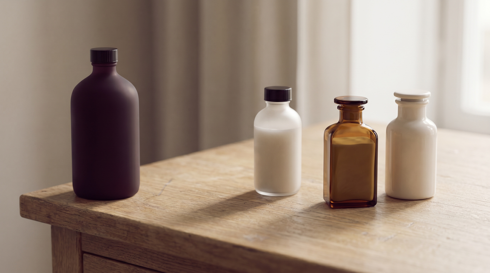

Protocolo assinatura
01 / 06
Repouso · 90 dias
Um protocolo de três meses dedicado à recuperação da barreira cutânea. Indicado para peles sensibilizadas por uso excessivo de ativos ao longo do tempo.
A proposta é restaurar a função de barreira antes de qualquer procedimento — o princípio da dermatologia clínica aplicado ao estético. Inclui consultoria de rotina, acompanhamento mensal e reavaliação ao final.
R$ 1.200 · acompanhamento trimestral
Marcar conversa
